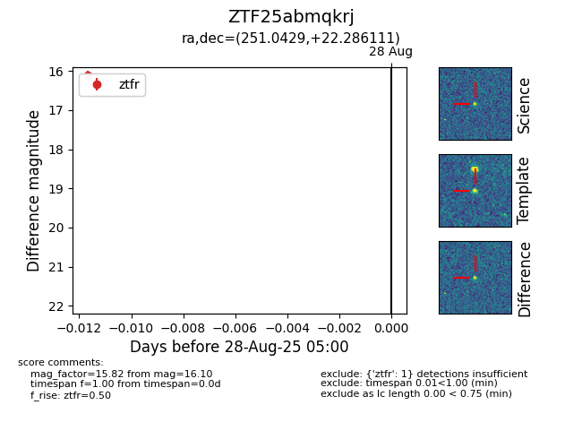

Target ZTF25abmqkrj at 2025-08-28 05:00, see:
FINK: fink-portal.org/ZTF25abmqkrj
Lasair: lasair-ztf.lsst.ac.uk/objects/ZTF25abmqkrj
ALeRCE: alerce.online/object/ZTF25abmqkrj
alt names
ZTF25abmqkrj (ztf,fink)
coordinates:
equatorial (ra, dec) = (251.0429,+22.28611)
galactic (l, b) = (41.2583,+37.37852)
photometry
last ztfr=16.10
1 ztfr detections
